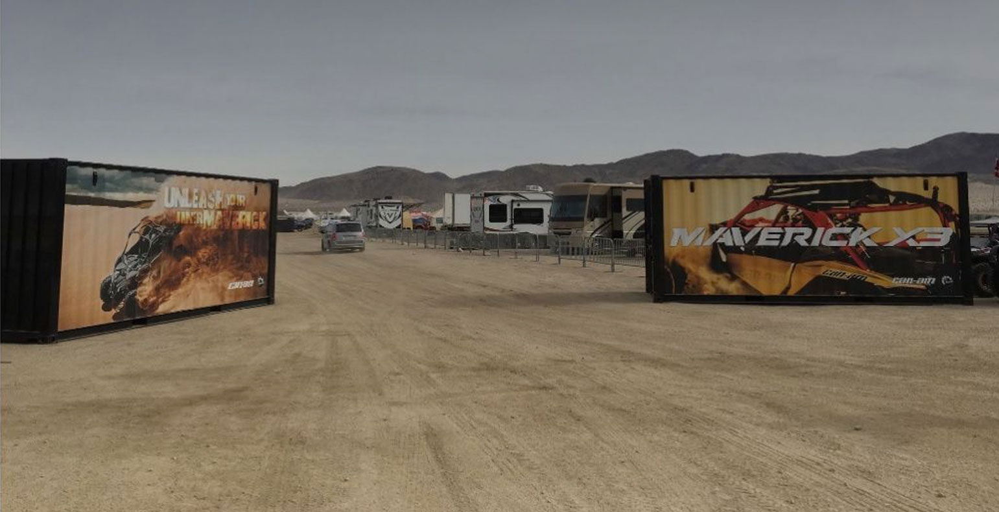

На финальный старт KING OF HAMMERS выйдет боле 70 SIDE-by-SIDE
KOH по праву является самой жесткой внедорожной гонкой в мире.
Участникам предстоит скоростная гонка в калифорнийской пустыне и горный краулинг.
Острые камни, обманчивый песок, крутые спуски и подъемы - адский коктейль собран в один гоночный день!
Но KIHG OF HAMMERS это не только гонки! В огромном базовом лагере в этом году организован тест-драйв техники can-am.
Каждый желающий имея набор экипировки ( шлем, джерси с длинным рукавом и очки ) может протестировать новый MAVERICK X3
Многочисленные инструкторы смогут ответить на все вопросы и оказать грамотную консультацию.
Нечто подобное мы могли видеть по соседству с прошедшим осенью 2016 года RZR CAMP
В культовой для всего UTV движения пустыне GLAMIS была организована площадка CAN AM
Работали DJ , проходил тест драйв, а на автограф сессии был сам BJ Baldwin